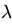
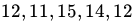

Home / MLF / Week 12 / Real questions
MLF week 12 - real exam questions
6 questions pulled from past papers whose wording matches this week's topics, newest first, duplicates removed. Pick your answers, then press Check answers. Figures and answer keys are the originals.
Elapsed 00:00
Let  be a discrete random variable such that
be a discrete random variable such that  with
with  where
where  is an unknown parameter. Consider the random sample
is an unknown parameter. Consider the random sample  from . The maximum likelihood estimate of
from . The maximum likelihood estimate of  is:
is:
be a discrete random variable such that with where is an unknown parameter. Consider the random sample from . The maximum likelihood estimate of is:


The dataset  is sampled from a distribution whose PDF is given below with parameter
is sampled from a distribution whose PDF is given below with parameter  :
:
 Assume that each point in the dataset is sampled independently from this distribution. Find the maximum likelihood estimate for . Your answer should be an integer.
Assume that each point in the dataset is sampled independently from this distribution. Find the maximum likelihood estimate for . Your answer should be an integer.
is sampled from a distribution whose PDF is given below with parameter :
Assume that each point in the dataset is sampled independently from this distribution. Find the maximum likelihood estimate for . Your answer should be an integer.Let  be a discrete random variable such that
be a discrete random variable such that  and
and  where is an unknown constant. Consider a random sample
where is an unknown constant. Consider a random sample  . Find the maximum likelihood estimate of for the given sample. Enter the answer correct to one decimal place.
. Find the maximum likelihood estimate of for the given sample. Enter the answer correct to one decimal place.
be a discrete random variable such that and where is an unknown constant. Consider a random sample . Find the maximum likelihood estimate of for the given sample. Enter the answer correct to one decimal place.The time (in minutes) a bank employee spends assisting a customer follows an exponential distribution with parameter

. The time spent (in minutes) from a random sample of 5 customers are as follows:
Find the maximum likelihood estimate of for the given sample. Enter the answer correct to two decimal places.In a large town, it is estimated that 20% of students own a laptop. A random sample of 400 students is selected from the town. What is the variance of the number of students with the laptops in a given sample?
A quality control manager at a factory measures the thickness of glass sheets produced. Five randomly selected sheets have the thicknesses(in mm) 10, 8, 11, 9, 12 respectively. Assuming the thickness follows a normal distribution and the variance is known, what is the maximum likelihood estimator (MLE) of the mean thickness, (μ), in mm of the glass sheets?